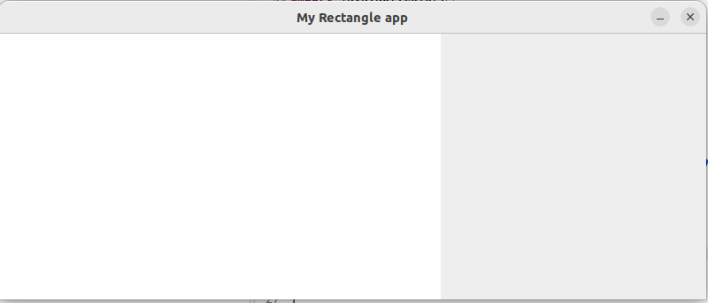
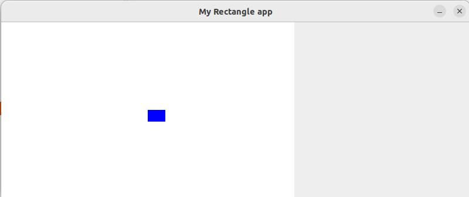
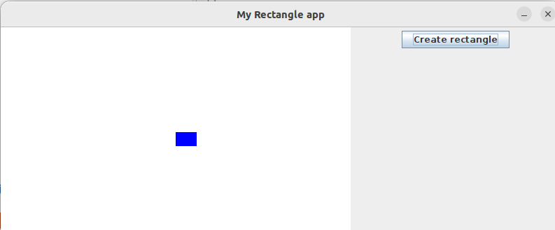

Cours 5 : Applications graphiques et design MVC
Viviane Pons
Master BIBS Université Paris-Saclay
“Hello World” Swing
JFrame fenetre = new JFrame();
fenetre.setTitle("Première fenêtre en java");
fenetre.setBounds(0,0,300,100);
fenetre.setDefaultCloseOperation(JFrame.EXIT_ON_CLOSE);
JPanel panel = new JPanel();
JLabel helloWorld = new JLabel("Hello World !");
panel.add(helloWorld);
fenetre.getContentPane().add(panel);
fenetre.setVisible(true);Ajout d’un bouton
JFrame fenetre = new JFrame();
fenetre.setTitle("Première fenêtre en java");
fenetre.setBounds(0,0,300,100);
fenetre.setDefaultCloseOperation(JFrame.EXIT_ON_CLOSE);
JPanel panel = new JPanel();
JLabel helloWorld = new JLabel("Hello World !");
JButton bouton = new JButton("Je suis un bouton");
panel.add(helloWorld);
panel.add(bouton);
fenetre.getContentPane().add(panel);
fenetre.setVisible(true);Et ensuite ? Comment faire pour gérer le clic sur le bouton ? Plus généralement, comment lier l’interface graphique au reste du programme ?
Qu’est-ce que les design patterns ? Ou patrons de conception en français : ce sont des solutions à des problèmes
Pour Modèle-Vue-Contrôleur ou en anglais Model-View-Controller
GUI en anglais pour “Graphical User Interface”framework associésOrganiser son architecture et son code en séparant trois rôles :
Pourquoi ? Organisation, modularité, maintenabilité, séparation des compétences et expertises
Nous allons concevoir une petite application graphique en suivant ce modèle. Cela nous permettra de voir :
SwingSwingSwingLe code final de l’application exemple est disponible ici.
Le but de l’application est de contrôler le dessin d’un rectangle dans une fenêtre. Le modèle ici est une classe qui représente le rectangle.
Cette classe contient des champs pour contrôler la position et la taille du rectangle à l’intérieur d’une plus grande boite (gérée avec des paramètres statiques).
Elle contient aussi des méthodes pour déplacer et redimensionner le rectangle tout en vérifiant qu’on reste dans la grande boite.
Important : en aucun cas, le modèle ne doit dépendre de l’interface graphique, ni du contrôleur. Il est entièrement indépendant. C’est ce qui assure la modularité : on peut conserver le modèle tel quel si on change d’interface graphique. On peut d’ailleurs avoir plusieurs interfaces graphiques pour un seul modèle.
L’objectif est maintenant de construire la “vue” et le “contrôleur” qui vont correspondre à ce modèle.
Pour la vue, on commencer par créer une interface RectangleAppView qui va lister les méthodes spécifiques dont on aura besoin. Cela va permettre de séparer ce qui correspond à notre architecture spécifique et ce qui vient des éléments Swing. On garde ainsi un code plus modulaire.
public interface RectangleAppView {
public void initialize();
public void setRectanle(Rectangle rectangle);
}Pour l’instant, l’interface ne contient que 2 méthodes : on l’enrichira au fur et à mesure.
Note : la vue ne doit que “voir” le modèle, elle ne doit pas directement le modifier (ça c’est le rôle du controleur). Pour une meilleure encapsulation, on pourrait donc lui passer seulement un objet qui est capable de “lire” les données mais pas d’écrire.
RectangleAppFrameOn va maintenant créer les vrais classes qui vont implémenter notre vue. La classe de la fenêtre principale hérite de JFrame et implémente notre interface.
Que mettre dans cette classe ?
Un constructeur :
JPanelSoit à la création, soit à l’initialisation, il faut créer les composants graphiques.
Une fenêtre Swing est organisée en “panneaux” (classe JPanel). Ces panneaux peuvent contenir d’autres panneaux ainsi que des composants type boutons, texte, etc.
Ici, on va créer deux panneaux : un pour les boutons et les options et un pour dessiner le rectangle.
Le panneau de dessin du rectangle aura des besoins graphiques spécifiques, on va créer une classe qui hérite de JPanel.
RectanglePanelpublic class RectanglePanel extends JPanel {
private Rectangle rectangle;
public RectanglePanel(int width, int height) {
super();
setPreferredSize(new Dimension(width, height));
setBackground(Color.WHITE);
}
...
} C’est le panneau du rectangle qui a besoin de voir le modèle donc c’est lui qui stocke le rectangle. A la création, on lui donne la bonne dimension et on passe sa couleur de fond à blanc.
Revenons à RectangleAppFrame. On va stocker deux variables d’instances qui pointent sur les deux panneaux.
public class RectangleAppFrame extends JFrame implements RectangleAppView {
RectanglePanel rectanglePanel;
JPanel buttonPanel;
public RectangleAppFrame(String name, int boundx, int boundy) {
...
rectanglePanel = new RectanglePanel(boundx, boundy);
buttonPanel = new JPanel();
buttonPanel.setPreferredSize(new Dimension(300, boundy));
add(rectanglePanel, BorderLayout.WEST);
add(buttonPanel, BorderLayout.EAST);
pack();
}On fabrique les panneaux, on donne les bonnes dimensions au panneau des boutons. On ajoute les panneaux à la fenêtre principale (qui contient aussi un panneau). Puis on appelle pack() qui va automatiquement calculer la taille de la fenêtre en fonction de la taille de ses panneaux.
Le positionnement des composants à l’intérieur d’un panneau est défini par son “layout”. La fenêtre principale possède par défaut un panneau dont le layout est “Border layout” : cela signifie qu’on peut ajouter 5 sous-panneaux (est, ouest, nord, sud et centre). Par défaut, les JPanel utilisent par défaut un layout appelé FlowLayout où les éléments se placent les uns à la suite des autres de façon assez naturelle. Il existe d’autres layout (GridLayout, BoxLayout, etc.).
Je ne vous donne pas des explications détaillées sur le fonctionnement des layout : à vous de chercher et vous renseigner quand vous en aurez besoin.
RectangleAppViewpublic class RectangleAppFrame extends JFrame implements RectangleAppView {
...
@Override
public void initialize() {
rectanglePanel.initialize();
setVisible(true);
}
@Override
public void setRectanle(Rectangle rectangle) {
rectanglePanel.setRectangle(rectangle);
}
}L’initialisation ne fait qu’initialiser le panneau rectangle et rendre la fenêtre visible. La méthode setRectangle délègue au panneau rectangle.
On crée une classe RectangleController
public class RectangleController {
public static final int BOUNDX = 500;
public static final int BOUNDY = 300;
private Rectangle rectangle;
private RectangleAppView view;
public RectangleController() {
view = new RectangleAppFrame("My Rectangle app", BOUNDX, BOUNDY);
}
public void initialize() {
view.initialize();
}
}La classe contient un pointeur sur le modèle et un sur la vue. Pour l’instant, elle ne fait que créer la vue.
La fonction main va servir à lancer l’application, ce qui se fait ici en lançant la méthode initialize du contrôleur. On va le faire de cette façon :
SwingUtilities.invokeLater(() -> new RectangleController().initialize());Mais c’est quoi cette façon bizare ? C’est à cause des threads. Pour simplifier, les threads sont les différents sous-programmes de votre programme. Et pour que ça marche bien, le graphique doit être géré dans un thread à part. L’appel à SwingUtilities permet un appel différé par le thread en question. A votre niveau, vous n’avez pas besoin de comprendre le détail. Pour des applications graphiques simples, le multi threading se passe sans que ayez à vous en soucier en dehors de cette ligne d’appel.
On a maintenant les éléments minimums de la vue et du contrôleur pour lancer notre programme. Pour l’instant, il ne fait qu’ouvrir une fenêtre avec un grand panneau blanc et un plus petit panneau gris. Il n’y a aucun rectangle, c’est pas ultra intéressant…

Mais on y arrive !
Le but est de contrôler un rectangle : pour ça il faut qu’on crée et qu’on dessine ce rectangle.
A l’initialisation du contrôleur, on va créer un nouveau rectangle et le passer à la vue.
Dans la classe RectanglePanel, on va faire en sorte de dessiner le rectangle. Pour cela on surcharge (override) la méthode paintComponent héritée de JPanel.
Maintenant, on voit un rectangle bleu apparaître sur fond blanc quand on lance l’application. (Ouah… Trop beau..)

Ca reste assez peu intéressant, comment contrôler le rectangle ?
On va ajouter un bouton pour faire apparaître le rectangle. Tout d’abord, on va créer une interface pour nos boutons toujours dans l’idée de modulariser et de gérer la communication entre la vue et le contrôleur.
On crée ensuite une classe RectangleAppButton qui hérite de JButton, le composant bouton de Swing et qui implémente notre interface.
A présent, dans RectangleAppFrame, on crée et on ajoute le bouton au panneau des boutons.
public class RectangleAppFrame extends JFrame implements RectangleAppView {
...
RectangleAppButton makeRectangleBtn;
...
@Override
public void initialize() {
makeRectangleBtn = new RectangleAppButton("Create rectangle");
buttonPanel.add(makeRectangleBtn);
rectanglePanel.initialize();
setVisible(true);
}
}L’application ressemble maintenant à ça :

Mais comment faire pour qu’il se passe quelque chose quand on appuie sur le bouton ?
ListenersSuivant le principe du MVC, Swing sépare l’objet graphique bouton de l’action enclenchée par le clic. Tout le principe de l’interface graphique est basée sur l’idée “d’évènements” qui sont lancés par les composants et “écoutés” par d’autres classes. C’est un framework qui est directement inspiré par la philosophie du MVC et que l’on retrouve, sous une forme ou une autre, dans la plupart des bibliothèques graphiques.
Dans notre application, on va transformer notre contrôleur RectangleController en “écouteur” en ajoutant l’interface ActionListener.
Plutôt que d’ajouter le rectangle à l’initialisation, on va l’ajouter quand la méthode actionPerformed est appelée.
Mais ce n’est pas tout, il faut aussi dire au contrôleur d’écouter le bouton. Pour cela, on ajoute une méthode dans notre interface RectangleAppView
Et on l’implémente dans RectangleAppFrame
Et on l’appelle dans le contrôleur
public void initialize() {
view.initialize();
view.setListenerOnButtons(this);
}Mais ça ne marche toujours pas !! POURQUOI ? Désespoir
Mais non, il y a une raison simple : la vue ne sait pas que quelque chose a changé, elle a besoin d’être mise à jour.
On rajoute une méthode update dans l’interface et dans la classe :
La méthode update appelle la méthode repaint du JPanel rectanglePanel.
Et bien sûr, on appelle update depuis le contrôleur.
@Override
public void actionPerformed(ActionEvent e) {
rectangle = new Rectangle(250, 150, 30, 20);
rectangle.setFillColor(Color.BLUE);
view.setRectanle(rectangle);
view.update();
}Maintenant, ça marche !
On va créer un bouton pour faire disparaître le rectangle.
public class RectangleAppFrame extends JFrame implements RectangleAppView {
...
RectangleAppButton makeRectangleBtn;
RectangleAppButton deleteRectangleBtn;
...
@Override
public void initialize() {
makeRectangleBtn = new RectangleAppButton("Create rectangle");
deleteRectangleBtn = new RectangleAppButton("Delete rectangle");
buttonPanel.add(makeRectangleBtn);
buttonPanel.add(deleteRectangleBtn);
...
}
@Override
public void setListenerOnButtons(ActionListener listener) {
makeRectangleBtn.addActionListener(listener);
deleteRectangleBtn.addActionListener(listener);
}
...
}Mais comment faire pour séparer les actions ?
On va créer une liste d’actions différentes avec un enum.
On va attacher les actions aux boutons. Pour cela, on rajoute des méthodes dans notre interface RectangleAppActionComponent que l’on implémente dans RectangleAppButton.
On attache l’action correspondante à chacun des boutons dans RectangleAppFrame
@Override
public void initialize() {
makeRectangleBtn = new RectangleAppButton("Create rectangle");
makeRectangleBtn.setRectangleAction(RectangleAction.CREATE);
deleteRectangleBtn = new RectangleAppButton("Delete rectangle");
deleteRectangleBtn.setRectangleAction(RectangleAction.DELETE);
buttonPanel.add(makeRectangleBtn);
buttonPanel.add(deleteRectangleBtn);
rectanglePanel.initialize();
setVisible(true);
}Le contrôleur récupère l’action reçue (grâce à la méthode getSource de ActionEvent) et agit en conséquence.
@Override
public void actionPerformed(ActionEvent e) {
RectangleAppActionComponent button = (RectangleAppActionComponent) e.getSource();
switch(button.getRectangleAction()) {
case CREATE:
rectangle = new Rectangle(250, 150, 30, 20);
rectangle.setFillColor(Color.BLUE);
view.setRectanle(rectangle);
break;
case DELETE:
rectangle = null;
view.setRectanle(null);
break;
default:
break;
}
view.update();
}Encore une fois, on va essayer de faire ça de façon générique en séparant ce qui relève du contrôleur de ce qui relève de la vue.
Ce qui se passe, c’est qu’on a en fait 2 états possible de la vue : avec et sans rectangle. On va créer les deux méthodes correspondantes dans notre interface RectangleAppView
On les implémente dans RectangleAppFrame en rendant visible / invisible les éléments que l’on souhaite.
Dans le contrôleur, on appelle la méthode appropriée que ce soit à l’intitialisation
Que lors d’un évènement
@Override
public void actionPerformed(ActionEvent e) {
RectangleAppActionComponent button = (RectangleAppActionComponent) e.getSource();
switch(button.getRectangleAction()) {
case CREATE:
rectangle = new Rectangle(250, 150, 30, 20);
rectangle.setFillColor(Color.BLUE);
view.setRectanle(rectangle);
view.drawWithRectangleView();
break;
case DELETE:
rectangle = null;
view.setRectanle(null);
view.drawNoRectangleView();
break;
default:
break;
}
view.update();
}De la même façon, on peut rajouter des boutons correspondants à toutes les actions suivantes :
On peut ajouter des “écouteurs” pour d’autres actions, par exemple un KeyListener pour les touches du clavier. On implémente l’interface avec
public class RectangleController implements ActionListener, KeyListener {
...
@Override
public void keyTyped(KeyEvent e) {
// TODO Auto-generated method stub
}
@Override
public void keyPressed(KeyEvent e) {
// TODO Auto-generated method stub
}
@Override
public void keyReleased(KeyEvent e) {
// TODO Auto-generated method stub
}
}Voilà une implémentation possible de la méthode keyPressed
@Override
public void keyPressed(KeyEvent e) {
switch(e.getKeyCode()) {
case KeyEvent.VK_LEFT:
rectangle.trymove(-1, 0);
break;
case KeyEvent.VK_RIGHT:
rectangle.trymove(1, 0);
break;
case KeyEvent.VK_UP:
rectangle.trymove(0, -1);
break;
case KeyEvent.VK_DOWN:
rectangle.trymove(0, 1);
break;
case KeyEvent.VK_C:
rectangle.tryExtendWidth(-1);
break;
case KeyEvent.VK_V:
rectangle.tryExtendWidth(1);
break;
case KeyEvent.VK_B:
rectangle.tryExtendHeight(-1);
break;
case KeyEvent.VK_N:
rectangle.tryExtendHeight(1);
break;
}
view.update();
}Il faut ensuite ajouter les méthodes et appels nécessaires pour que le contrôleur soit bien ajouté comme écouteur des actions clavier de la fenêtre principale.
Comme on utilise à la fois des boutons et le clavier, il faut faire un peu attention car l’écoute du clavier que si le “focus” est sur le bon objet.
On doit spécifier que la fenêtre est “focusable”
On récupère le focus à chaque fois qu’on active l’écoute clavier
public class RectangleAppFrame extends JFrame implements RectangleAppView {
...
@Override
public void startKeyListener(KeyListener listener) {
addKeyListener(listener);
requestFocus();
}
@Override
public void stopKeyListener(KeyListener listener) {
removeKeyListener(listener);
}
...
}Côté contrôleur, on relance l’écoute du clavier après chaque action de bouton :
@Override
public void actionPerformed(ActionEvent e) {
if(rectangle != null) {
view.stopKeyListener(this);
}
switch(button.getRectangleAction()) {
case CREATE:
rectangle = new Rectangle(250, 150, 30, 20);
rectangle.setFillColor(Color.BLUE);
view.setRectanle(rectangle);
view.drawWithRectangleView();
mouseListener = new ControllerMouseMotionListener();
break;
case DELETE:
rectangle = null;
view.setRectanle(null);
view.drawNoRectangleView();
break;
...
}
if(rectangle != null) {
view.startKeyListener(this);
}
view.update();
}On veut pouvoir déplacer le rectangle à la souris. Le listener qui correspond à cette action est le MouseMotionListener. On ajoute des méthodes à notre vue :
Dans RectangleAppFrame, on délègue en réalité cette action au panneau sur lequel est dessiné le rectangle. Ainsi, la position renvoyée par la souris correspondra bien à la position théorique dans le modèle.
La gestion du mouvement de la souris va demander un peu de logique interne. Pour ne pas mélanger cette logique avec celle du contrôleur général, on va créer une nouvelle classe dédiée spécifiquement à l’écoute de la souris.
On veut que l’objet créé ait accès à tous les paramètres internes du contôleur et par ailleurs, cette classe ne sera utilisée que à l’intérieur d’une instance du contrôleur : la solution est de passer par une classe interne.
Les classes internes sont utilisées exactement pour répondre au problème qu’on vient d’énoncer :
Il y a parfois des petites subtilités techniques mais globalement, leur utilisation est assez naturelle. Comme on les voit très souvent dans le contexte des interfaces graphiques (où il faut tout le temps créer des listeners), je vous montre cet exemple là.
public class RectangleController implements ActionListener, KeyListener {
...
private class ControllerMouseMotionListener implements MouseMotionListener {
private boolean startDrag;
private int prevx;
private int prevy;
ControllerMouseMotionListener() {
startDrag = false;
}
@Override
public void mouseDragged(MouseEvent e) {
if(! startDrag) {
int x = e.getX();
int y = e.getY();
if(rectangle.insideRectanle(x, y)) {
startDrag = true;
prevx = x;
prevy = y;
}
} else {
int diffx = e.getX() - prevx;
int diffy = e.getY() - prevy;
rectangle.trymove(diffx, diffy);
prevx = e.getX();
prevy = e.getY();
view.update();
}
}
@Override
public void mouseMoved(MouseEvent e) {
startDrag = false;
}
}Scoop: en fait, on aurait même pu faire ce qui s’appelle une “classe anonyme” mais j’ai préféré ne pas vous embrouiller surtout que ça rend le code peu lisible.
Cependant, si vous parcourez des exemples de code d’interface graphique en java, vous en verrez sûrement et dans ce cas, pas de panique : cherchez un peu plus d’info, ce n’est pas plus compliqué que les classes internes.
public class RectangleController implements ActionListener, KeyListener {
...
private ControllerMouseMotionListener mouseListener;
@Override
public void actionPerformed(ActionEvent e) {
...
switch(button.getRectangleAction()) {
case CREATE:
rectangle = new Rectangle(250, 150, 30, 20);
rectangle.setFillColor(Color.BLUE);
view.setRectanle(rectangle);
view.drawWithRectangleView();
mouseListener = new ControllerMouseMotionListener();
view.startMouseMotionListener(mouseListener);
break;
case DELETE:
rectangle = null;
view.setRectanle(null);
view.drawNoRectangleView();
view.stopMouseMotionListener(mouseListener);
break;
...
}
...
}Ceci, n’est qu’un exemple d’une architecture possible. Une partie de la séparation entre contrôle et vue est déjà assurée par Swing en séparant les composants des listener. Dans notre architecture :
Dans notre architecture :
Dans notre architecture :
L’implantation du contrôleur est très dépendante de l’architecture de Swing. Quand le contrôleur a plus de travail que lancer une action de base sur le modèle, on va vouloir séparer la partie plus “haut niveau”, de la partie “bas niveau” (les listeners) qui est dépendante de la bibliothèque graphique.
La partie bas niveau du contrôleur peut même être assimilée à la vue mais elle doit garder un moyen d’envoyer les évènements au contrôleur.
Ce qu’il faut garder à l’esprit : c’est une philosophie générale qu’il faut essayer d’adapter à bon escient. Le principe est de séparer les rôles.
Comment créer une interface graphique ?
Une interface graphique est un système de communication avec l’utilisateur final utilisant un affichage dans une fenêtre et réagissant aux actions de l’utilisateur tels que les clics et le clavier.
Côté programmation, cela demande d’interagir avec le système d’exploitation qui gère les différentes applications et les actions de l’utilisateur.
Java offre plusieurs bibliothèques :
la bibliothèque historique
AWTpour “Abstract Window Toolkit” : interfaçage bas niveau avec le système d’exploitationla bibliothèque
Swing: plus indépendante du système d’exploitation mais qui réutilise de nombreux composantsawt– encore très classique même si un peu anciennela bibliothèque
JavaFX: plus récente , architecture plus moderne et plus adaptée aux nouveaux supports (écrans tactiles par exemple). Nouvelle bibliothèque par défautCette année, on travaille avec le classique
Swingcar : encore très utilisé et distribué plus largement.